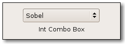

| GIMP Widgets Library Reference Manual | ||||
|---|---|---|---|---|
GimpIntComboBoxGimpIntComboBox — A widget providing a popup menu of integer values (e.g. enums). |
 |
GimpIntComboBox;
gboolean (*GimpIntSensitivityFunc) (gint value,
gpointer data);
GtkWidget* gimp_int_combo_box_new (const gchar *first_label,
gint first_value,
...);
GtkWidget* gimp_int_combo_box_new_valist (const gchar *first_label,
gint first_value,
va_list values);
GtkWidget* gimp_int_combo_box_new_array (gint n_values,
const gchar *labels[]);
void gimp_int_combo_box_prepend (GimpIntComboBox *combo_box,
...);
void gimp_int_combo_box_append (GimpIntComboBox *combo_box,
...);
gboolean gimp_int_combo_box_set_active (GimpIntComboBox *combo_box,
gint value);
gboolean gimp_int_combo_box_get_active (GimpIntComboBox *combo_box,
gint *value);
gulong gimp_int_combo_box_connect (GimpIntComboBox *combo_box,
gint value,
GCallback callback,
gpointer data);
void gimp_int_combo_box_set_sensitivity (GimpIntComboBox *combo_box,
GimpIntSensitivityFunc func,
gpointer data,
GDestroyNotify destroy);
GObject +----GInitiallyUnowned +----GtkObject +----GtkWidget +----GtkContainer +----GtkBin +----GtkComboBox +----GimpIntComboBox +----GimpEnumComboBox
GimpIntComboBox implements AtkImplementorIface, GtkBuildable, GtkCellEditable and GtkCellLayout.
gboolean (*GimpIntSensitivityFunc) (gint value, gpointer data);
|
|
|
|
Returns : |
GtkWidget* gimp_int_combo_box_new (const gchar *first_label, gint first_value, ...);
Creates a GtkComboBox that has integer values associated with each
item. The items to fill the combo box with are specified as a NULL
terminated list of label/value pairs.
If you need to construct an empty GimpIntComboBox, it's best to use g_object_new (GIMP_TYPE_INT_COMBO_BOX, NULL).
|
the label of the first item |
|
the value of the first item |
|
a NULL terminated list of more label, value pairs
|
Returns : |
a new GimpIntComboBox. |
Since GIMP 2.2
GtkWidget* gimp_int_combo_box_new_valist (const gchar *first_label, gint first_value, va_list values);
A variant of gimp_int_combo_box_new() that takes a va_list of
label/value pairs. Probably only useful for language bindings.
|
the label of the first item |
|
the value of the first item |
|
a va_list with more values |
Returns : |
a new GimpIntComboBox. |
Since GIMP 2.2
GtkWidget* gimp_int_combo_box_new_array (gint n_values, const gchar *labels[]);
A variant of gimp_int_combo_box_new() that takes an array of labels.
The array indices are used as values.
|
the number of values |
|
an array of labels (array length must be n_values)
|
Returns : |
a new GimpIntComboBox. |
Since GIMP 2.2
void gimp_int_combo_box_prepend (GimpIntComboBox *combo_box, ...);
This function provides a convenient way to prepend items to a
GimpIntComboBox. It prepends a row to the combo_box's list store
and calls gtk_list_store_set() for you.
The column number must be taken from the enum GimpIntStoreColumns.
|
a GimpIntComboBox |
|
pairs of column number and value, terminated with -1 |
Since GIMP 2.2
void gimp_int_combo_box_append (GimpIntComboBox *combo_box, ...);
This function provides a convenient way to append items to a
GimpIntComboBox. It appends a row to the combo_box's list store
and calls gtk_list_store_set() for you.
The column number must be taken from the enum GimpIntStoreColumns.
|
a GimpIntComboBox |
|
pairs of column number and value, terminated with -1 |
Since GIMP 2.2
gboolean gimp_int_combo_box_set_active (GimpIntComboBox *combo_box, gint value);
Looks up the item that belongs to the given value and makes it the
selected item in the combo_box.
|
a GimpIntComboBox |
|
an integer value |
Returns : |
TRUE on success or FALSE if there was no item for
this value.
|
Since GIMP 2.2
gboolean gimp_int_combo_box_get_active (GimpIntComboBox *combo_box, gint *value);
Retrieves the value of the selected (active) item in the combo_box.
|
a GimpIntComboBox |
|
return location for the integer value |
Returns : |
TRUE if value has been set or FALSE if no item was
active.
|
Since GIMP 2.2
gulong gimp_int_combo_box_connect (GimpIntComboBox *combo_box, gint value, GCallback callback, gpointer data);
A convenience function that sets the inital value of a
GimpIntComboBox and connects callback to the "changed"
signal.
This function also calls the callback once after setting the
initial value. This is often convenient when working with combo
boxes that select a default active item, like for example
gimp_drawable_combo_box_new(). If you pass an invalid initial
value, the callback will be called with the default item active.
|
a GimpIntComboBox |
|
the value to set |
|
a callback to connect to the combo_box's "changed" signal
|
|
a pointer passed as data to g_signal_connect()
|
Returns : |
the signal handler ID as returned by g_signal_connect()
|
Since GIMP 2.2
void gimp_int_combo_box_set_sensitivity (GimpIntComboBox *combo_box, GimpIntSensitivityFunc func, gpointer data, GDestroyNotify destroy);
Sets a function that is used to decide about the sensitivity of
rows in the combo_box. Use this if you want to set certain rows
insensitive.
Calling gtk_widget_queue_draw() on the combo_box will cause the
sensitivity to be updated.
|
a GimpIntComboBox |
|
a function that returns a boolean value, or NULL to unset
|
|
data to pass to func
|
|
destroy notification for data
|
Since GIMP 2.4
"ellipsize" property"ellipsize" PangoEllipsizeMode : Read / Write
Specifies the preferred place to ellipsize text in the combo-box, if the cell renderer does not have enough room to display the entire string.
Default value: PANGO_ELLIPSIZE_NONE
Since GIMP 2.4